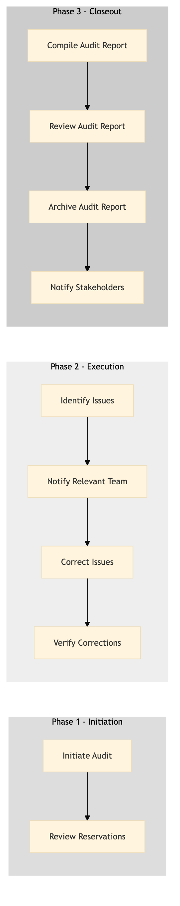

| Role | Steps |
|---|---|
| Revenue Manager | 1.1 1.2 2.1 2.2 2.3 2.4 3.1 3.2 3.3 3.4 |
| Front Desk Agent | 2.3 |
| Executive Housekeeper | 3.2 |
| Step | Name | Role | System | Input | Output | KPI | Dec? | Exc? | Pain Point / Risk |
|---|---|---|---|---|---|---|---|---|---|
| 1.1 | Initiate Audit | Revenue Manager | Oracle OPERA Cloud | Audit checklist | Audit log | Less than 5 minutes per reservation | N | Y | Handling unexpected discrepancies during the audit. |
| 1.2 | Review Reservations | Revenue Manager | Oracle OPERA Cloud, IDeaS G3 RMS | Reservation data from Oracle OPERA Cloud | List of discrepancies | Less than 10 minutes per reservation | Y | N | Time-consuming manual review process. |
| 2.1 | Identify Issues | Revenue Manager | Oracle OPERA Cloud, IDeaS G3 RMS | List of discrepancies | Detailed issue report | Less than 20 minutes per reservation | Y | N | Accurate identification of complex issues. |
| 2.2 | Notify Relevant Team | Revenue Manager | Oracle OPERA Cloud, Marriott Bonvoy CRM | Detailed issue report | Notification to relevant team | Less than 5 minutes per reservation | N | Y | Effective communication with different teams. |
| 2.3 | Correct Issues | Revenue Manager, Front Desk Agent | Oracle OPERA Cloud | Notification to relevant team | Updated reservation data | Less than 15 minutes per reservation | Y | N | Timely correction of issues. |
| 2.4 | Verify Corrections | Revenue Manager | Oracle OPERA Cloud | Updated reservation data | Verification report | Less than 10 minutes per reservation | Y | N | Ensuring all corrections are accurate. |
| 3.1 | Compile Audit Report | Revenue Manager | Oracle OPERA Cloud, Microsoft Power BI | Verification report | Final audit report | Less than 30 minutes per reservation | N | Y | Generating comprehensive reports. |
| 3.2 | Review Audit Report | Revenue Manager, Executive Housekeeper | Oracle OPERA Cloud | Final audit report | Approved audit report | Less than 15 minutes per reservation | Y | N | Ensuring the report meets all required standards. |
| 3.3 | Archive Audit Report | Revenue Manager | Oracle OPERA Cloud, SAP S/4HANA | Approved audit report | Archived audit report | Less than 5 minutes per reservation | N | Y | Properly archiving and managing reports. |
| 3.4 | Notify Stakeholders | Revenue Manager | Oracle OPERA Cloud, Marriott Bonvoy CRM | Approved audit report | Notification to stakeholders | Less than 10 minutes per reservation | N | Y | Effective communication with all stakeholders. |
The Reservation Quality Auditing process ensures that reservations at a Marriott full-service hotel are accurate and meet high standards of quality. This process is crucial for maintaining customer satisfaction and optimizing revenue management.